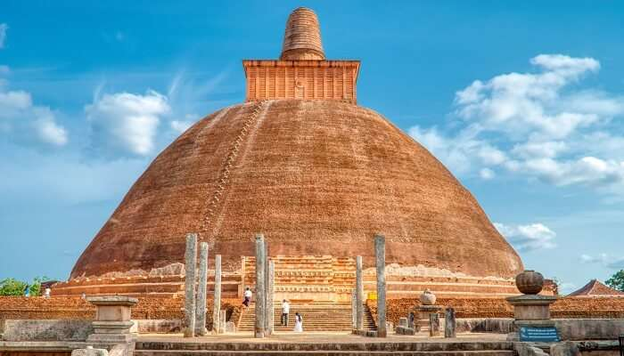

Sri Maha Bodhi

Jaya Sri Maha Bodhi is among the most ancient trees in Sri Lanka that even today are thriving in the Mahamewna Gardens of Anuradhapura. This special tree is said to have grown out of a cutting that was brought here from Bodh Gaya in India. It is believed that it has been brought from the very same place where Gautama Buddha had attained enlightenment, thus making it one of the most popular places to visit at Anuradhapura for pilgrims and spiritual souls. It was cared for by the ancient kings and queens of Sri Lanka, as well as many Buddhist leaders. Flourishing even in the harshest of conditions, this tree is said to have such tranquil beauty that it instills a sense of calm and peace in visitors.
Jetavanaramaya
The monastery of Jetavanaramaya is one of the largest monasteries in Anuradhapura. In fact, it was once the third-tallest structure in the whole world. The legend surrounding this ancient sanctum is that it’s the same place where Buddha’s sash or belt was tied and preserved for a long time, and that is what fascinates worshippers and history geeks from around the world and brings them here in large numbers every year. Luring in travelers with its enchanting historical significance, Jetavanaramaya still remains one of the largest holy structures in the world and is home to about 10,000 monks.
Ruwanwelisaya
Ruwanwelisaya Stupa is among the largest stupas (also called dagobas) in Sri Lanka and one of the most prominent places to visit in Anuradhapura, Sri Lanka. Built long ago by King Dutugamunu, this beautiful stupa is nestled right in the heart of the heritage city of Anuradhapura. Also called Maha Stupa, this adorned structure is over 338 feet tall and has large paved courts as well as platforms that all add a unique architectural touch to this magnificent structure. Recent renovations have earned this shrine the privilege of being one of the most revered sanctums of worship in Anuradhapura.
Lord Buddha figures at Gal Vihara

This is a UNESCO World Heritage Site. It is the perfect specimen of Lord Buddha statue created with solid stone. It was built during the reign of the great King Parakramabahu (1153-1186 A.C). The reclining Buddha sculpture is 14 m long, which represents Buddha entering the Nirvana stage. The sculptor artist of the Gal Vihara possessed a great deal of skill and expertise in the field of stone sculpture in the land of Sri Lanka.
The Buddha statue at Lankatilaka

The Lankatilaka Vihara is said to be one of the emblematic structures of an ancient kingdom of the city of Polonnaruwa. Two great walls created a narrow aisle that led the way to a very impressive, headless Buddha statue is still standing. The height of the statue is almost over 14m high. It was built by the great King Parakramabahu.
The Rankot Vihara

The Rankot Vihara stupa had been created by Nissanka Malla of the ancient city of Polonnaruwa. He had ruled the country for almost a decade from 1187 to 1196. The Rankoth Vehera have been created keeping in mind the old tradition of the Anuradhapura Maha Viharaya. It has an impressive height of 54 meters. The stone inscription near to the stupa describes it to be known as “Ruwanweli”